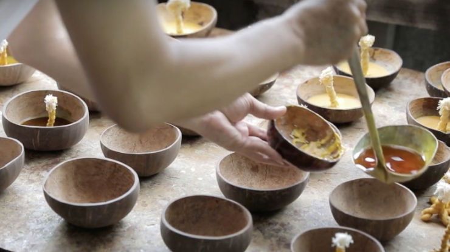
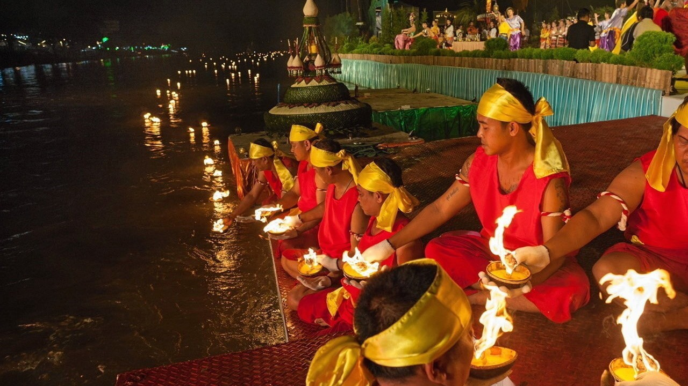
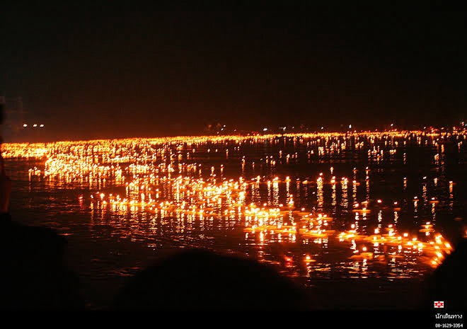

ขั้นตอนการทำกระทงสาย

ขั้นตอนที่ 1
เตรียมกะลามะพร้าว
เลือกกะลามะพร้าวที่แห้ง แข็งแรง ขนาดใกล้เคียงกัน เพื่อนำมาขัดทำความสะอาดและเจาะรูสำหรับใส่เชื้อไฟ

ขั้นตอนที่ 2
ใส่น้ำมันและไส้เทียน
เติมน้ำมันมะพร้าวลงในกะลา ใส่ไส้เทียนให้มั่นคง เพื่อให้เปลวไฟสว่างและติดทนนาน
ขั้นตอนที่ 3
เรียงกระทงเป็นสาย
นำกระทงที่เตรียมไว้มาเรียงเป็นแนวยาวตามลำน้ำ ให้มีระยะห่างเท่ากันอย่างสวยงาม

ขั้นตอนที่ 4
จุดไฟพร้อมกัน
จุดไฟกระทงทีละใบอย่างต่อเนื่อง จนเกิดเป็นแสงไฟเรียงต่อกันเป็นสายยาวบนผิวน้ำ

ขั้นตอนที่ 5
ชมความงดงาม จังหวัดตาก
เมื่อกระทงสายลอยไปตามน้ำ จะเกิดภาพแสงไฟที่งดงาม เป็นเอกลักษณ์หนึ่งเดียวของจังหวัดตาก